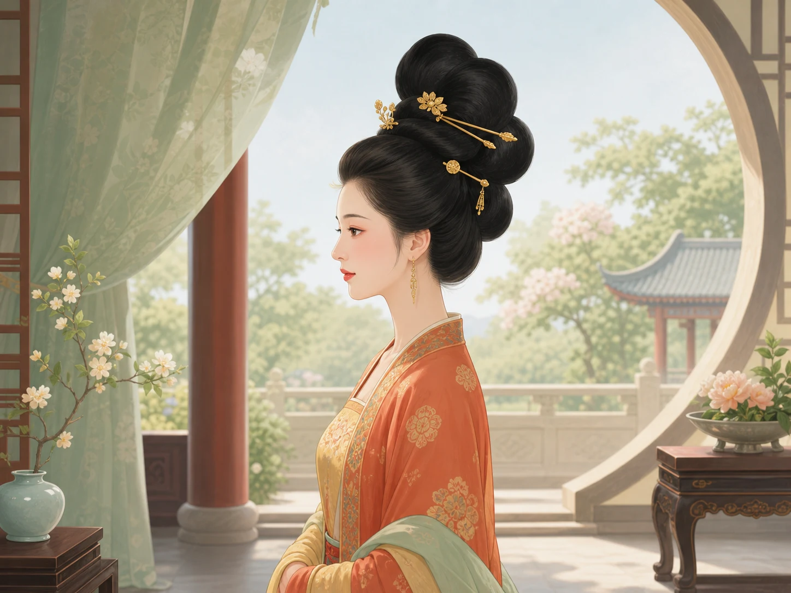

一张仕女图，能代表所有唐代女子吗？
Can One Court-Lady Picture Represent Every Tang Woman?
阅读难度 · 中等Reading level · Medium
Page 1
先别急着叫她“唐朝女子”
Don't Call Her “the Tang Woman” Yet

A modern imagined scene. It combines a high bun, gold ornaments, makeup, and a garden into one “classical beauty”; it is not a dated portrait of a known Tang woman.
屏幕上出现一位女子：头发盘得高高的，金簪闪光，衣袖宽大，身后还有一座花园。有人马上说：“唐朝女子就是这样！”可是，证据侦探会先按下暂停键：她生活在唐代哪一年？住在皇宫、城市还是乡村？她是贵族、侍女、商人、艺人，还是正在做体力活的人？这幅图是墓室壁画、陶俑、传世绘画，还是今天画家的想象？
唐朝从618年到907年，接近三百年。近三百年里，流行会变化；不同地区、身份和生活条件也不会只产生一种发式。初唐一些女俑的发髻较低小，八世纪前半叶的北方墓葬里已经能看见高而弯曲的髻，中晚唐又流行更高的髻和插梳等装饰。把其中一个时期的贵族样式叫作“所有唐代女子的日常”，就像拿今天一张电影节红毯照去代表全世界所有人的校服、工作服和家居服。
我们认识唐代妆发，常靠四类线索。墓室壁画能保留人物组合和颜色，却是为特定墓主人安排的图像；陶俑能让人从四周看发髻形状，却是随葬品，不是活人的快照；诗歌会写“云鬓”“金步摇”，重在声音和想象；出土的梳子、簪钗和假髻则能告诉我们真实材料，却常常离开了原来的完整穿戴场景。每一类证据都照亮一部分，也都留下一块阴影。
A woman appears on a screen. Her hair rises in a tall bun, gold pins shine above it, broad sleeves frame her body, and a garden fills the background. Someone quickly announces, “This is what Tang women looked like!” An evidence detective presses pause. When in the Tang dynasty did she live? Was she in a palace, a city, or a farming village? Was she an aristocrat, attendant, merchant, entertainer, or laborer? Is this a tomb mural, a pottery figure, an old painting, or a modern artist's invention?
The Tang dynasty lasted from 618 to 907 - almost three hundred years. Fashion changed across those centuries, and people of different regions, communities, jobs, and incomes did not share one hairstyle. Some early Tang figurines have smaller, lower buns. Northern tomb figures from the first half of the eighth century can show tall, curving chignons. In the middle and late Tang, still higher arrangements and decorative combs became fashionable in some circles. Calling one period's aristocratic look “every Tang woman's daily style” would be like using a film-festival photograph today to represent everyone's school clothes, work clothes, and pajamas.
Four kinds of clues often teach us about Tang hair and makeup. Tomb murals preserve groups of people and painted color, but they were designed for particular tomb owners. Pottery figures let us examine a hairstyle from several sides, but they are burial objects, not snapshots of living people. Poetry gives us phrases such as “cloudlike hair” and “gold buyao,” but poets shape sound and imagination. Excavated combs, pins, and false chignons reveal real materials, yet they are often separated from the complete outfit once worn around them. Each kind of evidence lights one part of the picture and leaves another in shadow.
Page 2
高髻里面藏着什么？
What Was Hidden Inside a High Bun?

A modern fantasy combination. Its large set of dangling chains does not copy one excavated Tang ornament. Tang hair ornaments did use gold, silver, jade, and mother-of-pearl, and some could tremble with movement.
假如一只陶俑的发髻比她的脸还高，侦探会问：全是真发吗？答案可能是否定的。唐代墓葬出土过假髻，也叫义髻。有的以麻布作衬，再固定真人头发；有的用薄木做成，涂黑并画上花纹。它们说明，至少有些有条件追逐高髻时尚的女子，会借助额外材料增加高度和体积。簪、钗和梳子既能固定，也能装饰；精美的金饰或螺钿梳背还要经过工匠制作。
这也让我们看见发式背后的劳动。一座复杂高髻需要梳理、分束、盘卷、固定，还可能要清洁和保存假髻，再挑选簪钗。做起来要时间、工具、材料，有时也需要另一双手。贵族或宫廷女子较可能拥有昂贵首饰和帮助她梳头的人；要赶路、种田、做买卖或搬东西的人，更可能先考虑头发是否牢固、是否妨碍工作。华丽形象保存得多，不等于它在人群中最普遍。
名字也可能骗人。诗中的“云鬓”可以是说头发乌黑蓬松、像云一样，并不是一张能照着施工的发型图。“半翻髻”“偏梳髻”“堕马髻”等名称出现在文献和后世研究里，但把一个词准确贴到某件陶俑上，常常仍是比较后的判断。故宫介绍一件高髻女俑时就用了“大概是文献中的偏梳髻”这样的谨慎说法。至于步摇，它的垂饰会随身体动作轻颤，名字很生动；可一件今天画得满头长链的首饰，不能只因“会摇”就自动变成唐代实物。
If a pottery figure's bun rises higher than her face, a detective may ask, “Is all of that real hair?” Sometimes it was not. False chignons, also called yiji, have been excavated from Tang tombs. Some used cloth backing with human hair attached; others were shaped from thin wood, darkened, and painted. They show that at least some women with the means to follow high-bun fashion added material for height and volume. Pins, two-pronged hairpins, and combs could both secure and decorate the arrangement. Fine gold ornaments or mother-of-pearl comb tops also required skilled craftwork.
This evidence makes the labor behind the style visible. A complicated high bun had to be combed, divided, coiled, and fastened. A false chignon might need cleaning and storage, and ornaments still had to be selected and placed. The work required time, tools, materials, and sometimes another pair of hands. An aristocratic or palace woman was more likely to own costly ornaments and have help dressing her hair. Someone traveling, farming, selling goods, or carrying loads might first need hair that stayed secure and out of the way. Splendid images survive in large numbers, but that does not make them the most common experience.
Names can trick us too. In poetry, “cloudlike hair” can describe dark, full hair and create a mood; it is not a construction diagram. Names such as “half-turned bun,” “side-combed bun,” and “falling-horse bun” appear in texts and later studies, but matching one name to one figurine is often an interpretation based on comparison. The Palace Museum cautiously says one high-bun figure is “probably” the side-combed style mentioned in writing. A buyao has hanging parts that tremble as the body moves, which gives it a wonderfully lively name. But a modern drawing covered in long gold chains does not become a Tang object simply because its ornaments sway.
Page 3
一张脸上需要多少种妆？
How Many Kinds of Makeup Belong on One Face?

A modern makeup illustration with a flower-shaped huadian between the brows. Its hair, brows, lips, and collar are a modern combination, not a standard look for one proven Tang date and place.
唐代图像和文字里出现过许多面部装饰。花钿是在额头、眉心或脸侧使用的小片或图案；额黄是在额部施黄色；斜红常画在太阳穴附近；面靥则是脸颊或嘴角附近的小点。白粉、胭脂、眉黛和唇脂也有各自的用法。这些名称告诉我们“装饰在哪里、用什么效果”，却不表示每个人每天都把整份清单涂在同一张脸上。
一件吐鲁番出土女俑可以同时保留高髻、花钿、斜红和面靥，证明这样的组合曾被表现过；另一幅公主墓里的宫女图，却可能显得清淡得多。差别可能来自年代、地点、人物角色、场合、画法，甚至颜料是否保存下来。我们不能看到褪色的脸就断定她没化妆，也不能把几件文物上的特色全部叠到一位现代模特脸上，再叫它“唐妆标准答案”。
流传很广的上官婉儿“用梅花妆遮伤痕”故事也应放在传说栏，而不是证据栏。花钿在上官婉儿之前已有发展，后人记载的版本又不完全相同。故事可以说明人们喜欢给流行妆容寻找一个难忘的起点，却不能证明她发明了花钿。美妆史很少由一个人、一天、一个意外突然开始。
Tang images and texts contain many kinds of facial decoration. A huadian was a small piece or painted shape placed on the forehead, between the brows, or sometimes elsewhere on the face. Ehuang added yellow to the forehead. Xiehong usually made red marks near the temples. Mianye created small dots near the cheeks or corners of the mouth. White powder, rouge, eyebrow pigment, and lip color had other jobs. These names tell us where an effect appeared; they do not mean that every person wore the entire list on one face every day.
One female figure excavated near Turpan preserves a high chignon together with huadian, xiehong, and mianye, showing that this combination was represented. A mural of palace attendants from a princess's tomb can look much plainer. The difference might come from date, place, role, occasion, artistic choice, or even which pigments survived. A faded face does not prove that its subject wore no makeup. Features gathered from several objects should not be stacked onto one modern model and called “the standard Tang face.”
The popular tale that Shangguan Wan'er used plum-blossom makeup to hide a forehead injury belongs in the folklore file, not the evidence file. Forehead decoration had developed before her lifetime, and later accounts do not all tell the same story. The tale shows how people like to give a memorable beginning to a fashion. It does not prove that Shangguan invented huadian. Beauty history rarely begins with one person, on one day, after one accident.
Page 4
时尚沿着人走，不带“纯正”标签
Fashion Traveled with People, Not Purity Labels
唐代城市通过陆路和海路连接许多地方。商人、使者、僧人、艺人、工匠和迁居家庭带着材料、技艺和穿衣习惯移动。墓葬俑里可以看见适合骑马的窄袖袍、长裤和靴子；一些材料和纹样也显示与草原、中亚、西亚等地的交流。人们会借用、调整，再与本地做法组合。时尚不是一只贴着“外国”标签的箱子，被完整搬进长安；也不存在从不变化的“纯正唐人样式”。
同一个帝国里还有许多地区和族群。长安宫廷的流行不等于吐鲁番居民的全部生活，北方墓里的陶俑也不能替南方劳动者梳头。发式更不能让我们自动读出婚姻状态或性格：某些年龄、礼仪或社群可能有习惯，但没有具体制度和背景，就不能说“梳这种髻一定未婚”或“戴那种钗一定大胆”。外表是线索，不是读心术。
Tang cities were connected to many places by land and sea. Merchants, envoys, monks, performers, craftspeople, and migrating families carried materials, skills, and clothing habits with them. Tomb figures show riding outfits with narrow sleeves, trousers, and boots. Some materials and designs also reveal contact with the steppe, Central Asia, West Asia, and other regions. People borrowed, adjusted, and combined ideas with local practices. Fashion was not a box labeled “foreign” that arrived in Chang'an unchanged. Nor was there one “pure Tang style” that never moved.
The empire itself contained many regions and communities. Court fashion in Chang'an cannot stand for all life in Turpan, and a tomb figure from northern China cannot style the hair of a laborer in the south. A hairstyle also cannot automatically reveal marriage status or personality. A particular age group, ceremony, or community might follow a custom, but without that specific context we cannot declare, “This bun always means unmarried,” or “That pin proves she was bold.” Appearance is evidence, not mind reading.
再看那张仕女图
Look at the Picture Again
现在再看开头那张图，我们不必说“它不是真的”，也不能说“唐朝女子全都这样”。更好的回答是：“这是一幅现代想象图，借用了几个唐代流行过的元素；要判断它靠近哪个时期、哪类人物，还得和有年代的壁画、陶俑、出土发饰和文献一项项比较。”
一张图最有价值的时候，不是它替三百年里的所有女性说话，而是它让我们继续追问：谁被画下来了？谁没有？哪些细节有实物支持？哪些只是今天觉得好看的混搭？这些问题，才是打开唐代梳妆盒的钥匙。
Look again at the opening picture. We do not have to say, “None of this is real,” but we also cannot say, “Every Tang woman looked like this.” A better answer is: “This is a modern imagined scene that borrows several elements used at some points in the Tang dynasty. To decide which period and group it resembles, we must compare each detail with dated murals, pottery figures, excavated ornaments, and texts.”
A picture becomes most useful when it does not speak for every woman across three hundred years. Instead, it makes us ask: Who was pictured? Who was left out? Which details have physical evidence? Which are combinations that look beautiful to people today? Those questions are the real keys to a Tang dressing box.